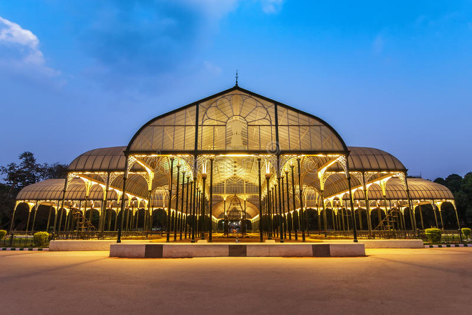

1. Built with granite, Vidhana Soudha is the largest legislative building in India. It measures 213.36 by 106.68 metres (700.0 by 350.0 ft) on the ground and is 53.34 metres (175.0 ft) tall. The architecture includes elements of styles from the mediaeval Chalukya, Hoysala and Vijayanagara empires of Karnataka.

2. Lalbagh Botanical Garden or simply Lalbagh (lit. 'red garden'), is an botanical garden in Bangalore, India, with an over 200-year history. First planned and laid out during the dalavaiship of Hyder Ali and later managed under numerous British Superintendents before Indian Independence. It was responsible for the introduction and propagation of numerous ornamental plants as well as those of economic value.